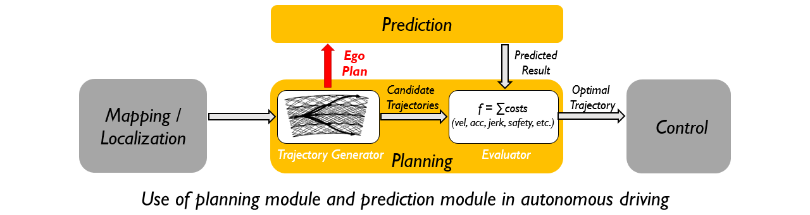
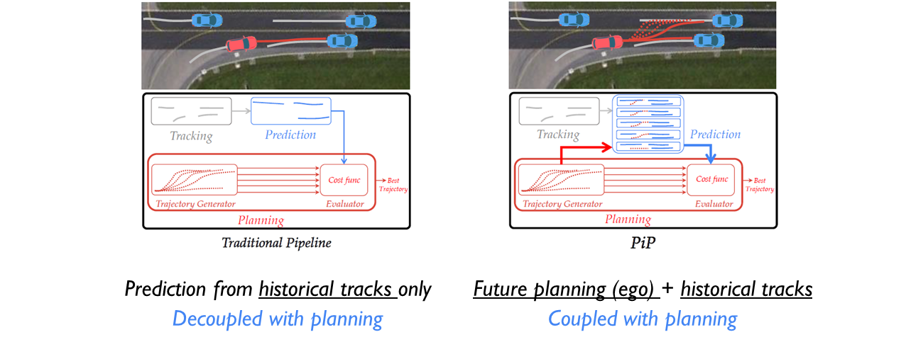

PiP: Planning-informed Trajectory Prediction
for Autonomous Driving
ECCV 2020
-
Haoran Song
HKUST -
Wenchao Ding
HKUST -
Yuxuan Chen
USTC -
Shaojie Shen
HKUST -
Michael Yu Wang
HKUST -
Qifeng Chen
HKUST
Abstract
It is critical to predict the motion of surrounding vehicles for self-driving planning, especially in a socially compliant and flexible way. However, future prediction is challenging due to the interaction and uncertainty in driving behaviors. We propose planning-informed trajectory prediction (PiP) to tackle the prediction problem in the multi-agent setting. Our approach is differentiated from the traditional manner of prediction, which is only based on historical information and decoupled with planning. By informing the prediction process with the planning of ego vehicle, our method achieves the state-of-the-art performance of multi-agent forecasting on highway datasets. Moreover, our approach enables a novel pipeline which couples the prediction and planning, by conditioning PiP on multiple candidate trajectories of the ego vehicle, which is highly beneficial for autonomous driving in interactive scenarios.
Technical Video
Motivation & Key idea
The relationship between the planning and the prediction module in most autonomous driving systems is illustrated below (without the “Ego Plan” arrow). To achieve real-time driving, most vehicle motion planners follow the sampling-based approach: first rolls out candidate trajectories fastly, then score them with some policies or user-defined functions, finally select the optimal one to execute. The role of the prediction module is to feed the future prediction of dynamic objects to the planning module, so as to evaluate the candidate plans more precisely.
The traditional manner of prediction is only based on the tracking results, decoupled from future planning. That is to say, the predicted future is inferred only from historical information and thereby the same for diverse ego's plans. However, the future plan of controllable ego agent will largely affect the behaviors of surrounding agents. It leads to a significant difference in future predictions. Then it comes to the motivation behind this work. We propose Planning informed Prediction that incorporates the ego vehicle’s future planning in the prediction process (with the “Ego Plan” arrow). It produces predictions one-to-one corresponding to the candidate future trajectories of the ego vehicle. This pipeline uncovers how the other vehicles will interact with ego vehicle if the ego vehicle executes any specific planning trajectory. Therefore it is especially suitable for planning in dense and highly interactive traffic.

The comparison between the traditional prediction approach (left) and PiP (right) is demonstrated under a lane merging scenario. Assume the ego vehicle (red) intends to merge to the left lane. It is required to predict the trajectories of surrounding vehicles (blue). To alleviate the uncertainty led by future interaction, PiP incorporates the future plans (dotted red curve) of ego vehicle in addition to the history tracks (grey curve). While the traditional prediction result is produced independently with the ego's future, PiP produces predictions one-to-one corresponding to the candidate future trajectories by enabling the novel planning-prediction-coupled pipeline. Therefore, PiP evaluates the planning safety more precisely and achieves more flexible driving behavior (solid red curve) compared with the traditional pipeline.
Architecture

PiP consists of three key modules, including planning coupled module, target fusion module, and maneuver-based decoding module. Each predicted target is firstly encoded in the planning coupled module by aggregating all information within the target-centric area (blue square). A target tensor is then set up within the ego-vehicle-centric area (red square) by placing the target encodings into the spatial gird based on their locations. Afterward, the target tensors are passed through the following target fusion module to learn the interdependency between targets, and eventually, a fused target tensor is generated. Finally, the prediction of each target is decoded from the corresponding fused target encoding in the maneuver-based decoding module. The target vehicle marked with an ellipse is exemplified for planning coupled encoding and multi-modal trajectories decoding.
BibTeX
@inproceedings{song2020pip,
title={PiP: Planning-informed Trajectory Prediction for Autonomous Driving},
author={Song, Haoran and Ding, Wenchao and Chen, Yuxuan and Shen, Shaojie and Wang, Michael Yu and Chen, Qifeng},
booktitle={European Conference on Computer Vision},
pages={598--614},
year={2020},
organization={Springer}
}